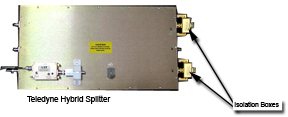
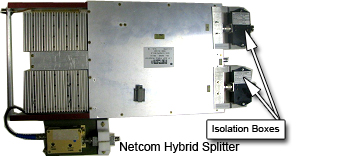
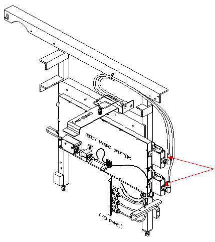
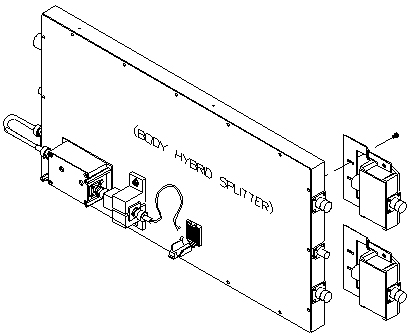

Operating Documentation
Direction 5440001-3, Rev# 6
Signa HDxt Service Methods
Module Version 3.0, Version Date 3/23/09
Operating Documentation |
| Required Persons | Preliminary Reqs | Procedure | Finalization |
|---|---|---|---|
| 1 | Not Applicable | 1 hour | 10 mins |
The Isolation Box is used with the 1.5T Hybrid Splitter. This procedure is a guide through troubleshooting and, if necessary, replacement of the isolation box.
| NOTE: | There is a slight difference between the two Hybrid Splitter designs. Each splitter has an isolation box with a unique mounting bracket. (See Illustration 1 and Illustration 2.) When replacing the isolation box, make sure to use the proper mounting bracket to attach the isolation box, or reuse the existing mounting bracket. |
Illustration 1: Teledyne Hybrid Splitter

Illustration 2: Netcom Hybrid Splitter

| Item | Qty | Effectivity | Part# | Manufacturer | |
|---|---|---|---|---|---|
| Non-Ferrous Screwdriver | 1 | - | - | - | |
| Lock Out Tag Out Equipment | 1 | - | - | - | |
| Digital Voltmeter (set to measure resistance; needed for troubleshooting only) | 1 | - | - | - | |
| Item | Qty | Effectivity | Part# | Manufacturer | |
|---|---|---|---|---|---|
| Isolation Box Assembly with mounting brackets for Teledyne Hybrid Splitter | 1 | - | 5118952 | - | |
| Isolation Box Assembly without mounting brackets | 1 | - | 5118952-3 | - | |
| Teledyne Hybrid Splitter Isolation Box Mounting Bracket | 1 | Reference Only | 5237198-2 | - | |
| Netcom Hybrid Splitter Isolation Box Mounting Bracket | 1 | Reference Only | 5237198 | - | |
| ||||
| Fatal Electrical Hazard! | ||||
| Dangerous voltages are present in the rear pedestal during normal operation. | ||||
| Perform lock out tag out as described in the first step of this document. |
| Condition | Reference | Effectivity |
|---|---|---|
Systems Cabinet, RF Amplifier and SSM/Driver Module are locked out and tagged out at the PDU per the LOTO procedure. | - | - |
| ||||
| Prior to powering down the entire Systems Cabinet, boot the Applications software down to the root level. The VRE System, which resides in the Systems Cabinet, can become corrupted if it loses power when the Applications software is active. | ||||
To boot the Applications software down to the root level, right mouse click and select [Service Tools] and [System Restart]. The Systems Cabinet can be powered down when the GUI login displays.
Perform LOTO on the Systems Cabinet, RF Amplifier and SSM/Driver Module:
Prepare for shutdown of equipment. Notify affected personnel working in the area that LOTO is being performed.
Flip the breaker switches for the System Cabinet, RF Amplifier and SSM to the OFF position.
Close the cover over the breaker switches, and install LOTO as instructed in Lock Out / Tag Out RF Systems Cabinet and RF Amplifier.
Verify the power is off by checking the fans and the LEDs on the Systems Cabinet, RF Amplifier and the SSM/Driver Module.
Remove the side covers on the rear pedestal.
Disconnect the I or Q cable from the suspected Isolation Box Assembly. (See Illustration 3.)
Illustration 3: Location of Isolation Box Assemblies

Using a non-ferrous screwdriver, remove the suspected Isolation Box Assembly. (See Illustration 4.)
| NOTE: | It may be difficult to access the screws for removal. If necessary, the Hybrid Splitter may be removed from the rear pedestal. |
Illustration 4: Removal of Isolation Box Assemblies

If there is a 90-degree connector attached to one of the outputs, be sure to remove it from the failed Isolation Box Assembly prior to continuing with the troubleshooting. (This 90-degree connector will need to be saved and used on the new Isolation Box Assembly.)
Set the DMM to measure resistance:
Measure the Isolation Box Assembly connector center pins from one end to the other and to the shell of the connectors. (See Illustration 5.)
Check that values are as expected. If not, replace the Isolation Box Assembly.
Illustration 5: Correct Measurements of Isolation Box Assembly (A & B: Center Pins of BNC Connectors)

Reinstall the 90-degree connector (removed previously from the failed Isolation Box Assembly) onto the new assembly.
Remove the existing Isolation Box mounting brackets from the failed Isolation Box Assembly, and reinstall on the new assembly.
Screw the new Isolation Box Assembly to the Body Hybrid.
Connect the Hybrid Splitter to the Isolation Box. Connect the I or Q cable to the other side of the Isolation Box.
Install the side covers on the rear pedestal.
Remove LOTO:
Notify affected personnel that equipment will be re-energized, and LOTO devices are being removed.
Remove LOTO equipment from PDU as described in Lock Out / Tag Out RF Systems Cabinet and RF Amplifier, and flip the breaker switches for the Systems Cabinet, RF Amplifier and SSM to the ON position.
Reset the Emergency Off switch.
Reset the TPS. (It should reset in about 1 minute and 20 seconds).
Perform a test scan to ensure system operation.